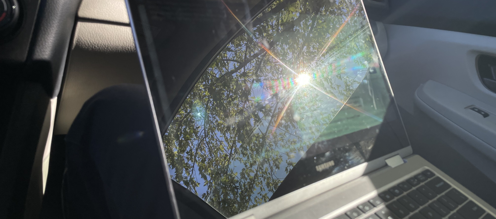

Amalgamation
September 20, 2024
It's a rather strange place to start a blog post, because the internet isn't great here.
However, the reflection was quite nice.
Recently, I've been reading a bunch of people's blogs, and stumbled upon this one. It stood out to me because it's written in a very different style from mine. Whereas mine is generally focused on one idea, his jumps between many different ones. I've been feeling jittery, so I'll be trying the jumpy style.
Unblocked
Our school allows us to take three electives on Fridays, generally separated into three blocks. I have the last one free, because I’ve found more freedom in being able to hop through whatever classes pique my interest, and being able to talk to different people.
So for the past few weeks, I’ve hung out in the art elective, took pictures for yearbook, did homework with different people, and cleaned the kitchenette.
Speaking of the kitchenette, it’s basically where
Apparently, many attempts have been done to clean the kitchenette in previous years, but the project never finished. I was told that I do things that I say I’ll do, hence why I hope to actually get it done this year.
Stringing words together
A poem I wrote recently, but have been struggling to come up with a title for:
Two moths pressed against the pane for a light they cannot reach
I search for answers through the glass
Can I trust you with the hurt I've held, the dreams I hold dear?
I was working in a lit room watching all the moths try to enter the room through the window. I didn’t realize that there were so many moths in this area. Apparently moths use light to orient themselves—they turn their backs towards the brightest source of light, which is usually up. However, that instinct is not ideal in this situation, because they’re actually just pressing their wings against the window.
So really, the first line of the poem is a bit misleading. The moths aren’t trying to travel towards the light, but rather, they’re trying to align themselves.
The original idea was that the moth is misled because it thinks that it can travel through the window—it appears transparent, when there’s really a barrier. The more accurate statement is that the moth is misled because its instinct doesn’t take into account the artificial lights. I suppose that the next lines still make sense though, because it depends on the moth getting misled. It’s like, I make this observation, which makes me ask myself whether there’s situations where I’m being misled in the context of trusting people.
I’ve been thinking about trust lately, because it’s extremely difficult to judge that in someone else, yet we count on it. I suppose we start small, and trust grows, but trust can be broken at any time.
I guess it’s happened so many times that it’s made me superstitious. But I still like to see the good in people.
But I think I have a good name for this poem now: “Moth to a Flame.” Though the meaning of this phrase is a little extreme, it conveys the level of intensity that I want to portray.
Wasps
A few weeks ago, our way to the biology lab, three people in our group were attacked by wasps.
For some reason, there have been a dramatically increased number of wasps this season. They’re freaking everywhere! At first, we thought the wasps liked people with black hair, because all three of those people had black hair. But it turns out that wasps aren’t attracted to the color black, but rather, bright colors. So we had made an assumption, and proved it wrong with some evidence. We decided that maybe the wasps were just having a bad day—perhaps we had walked by their nest when they also happened to be agitated.
I suppose this lesson could also apply to people. When people have a bad day and lash out, we can make a lot of assumptions about what’s going on. In some cases, we even hurt our own egos, and create misunderstandings.
I can easily forgive people. I can’t forgive wasps though. I still think they’re horrible.
The other path
“Life can only be understood backwards, but it must be lived forwards.”
— Soren Kierkegaard
Four years ago, I had a choice between going to the school I attend now, or going to a much larger public school.
I was grappling between whether I wanted to be a small fish in a big pond or a big fish in a small pond. At the time, I wasn’t sure that I could handle the competitiveness of the school I attend now. Ultimately, I chose to take the leap, but mainly for safety reasons. There would be a different kind of stress from going to a much larger, public school. Also, from attending the public middle school I was zoned for, I knew I wouldn’t have liked the culture.
Looking back, I do wonder why this was a choice to begin with, because I would choose this path again in a heartbeat. Yes, it’s competitive, but I think I was wrong to look at it through a fish-pond metaphor. It’s not quite… a small fish in a big pond here—I’m not sure if it can even be described with fish and bodies of water. But there’s a culture of consistently challenging yourself and trying new things, and most of the people are really supportive. It doesn’t have to be competitive unless you want it to be, and I’d prefer not.
Our school’s culture is slowly changing to be more like a large public school. I want to leave a legacy that it’s possible to go back to the close-knit community that it was before. But maybe I’m one of those grumpy seniors, thinking how it was better in the good ol’ days.
Ah... sleep
These days, my sleep time is around 11pm-12am, while my awake time is around 6-7am. I noticed that on nights that I slept from 12-6:30am, I felt more awake than on nights I slept from 11:30-6:30am, even though I got less sleep.
I realized that this might be because of sleep cycles. A sleep cycle is about 90 minutes long, and it’s optimal to wake up right after a sleep cycle has completed. Assuming it takes me around 30 minutes to fall asleep, if I were to follow the 12-6:30am schedule, I would be asleep for 6 hours, which is a multiple of 90 minutes. On the other hand, I would wake up in the middle of a sleep cycle if I were to follow the 11:30-6:30am schedule.
So even though I’m getting more sleep with the 11:30-6:30am schedule, it feels disadvantageous compared to sleeping with the 12-6:30am schedule. What I really should be getting from this is that I should follow a 10:30pm-6:30am schedule so that I’m getting in 5 sleep cycles, not 4.
✩₊˚.⋆☾⋆⁺₊✧
That is all, consider subscribing or